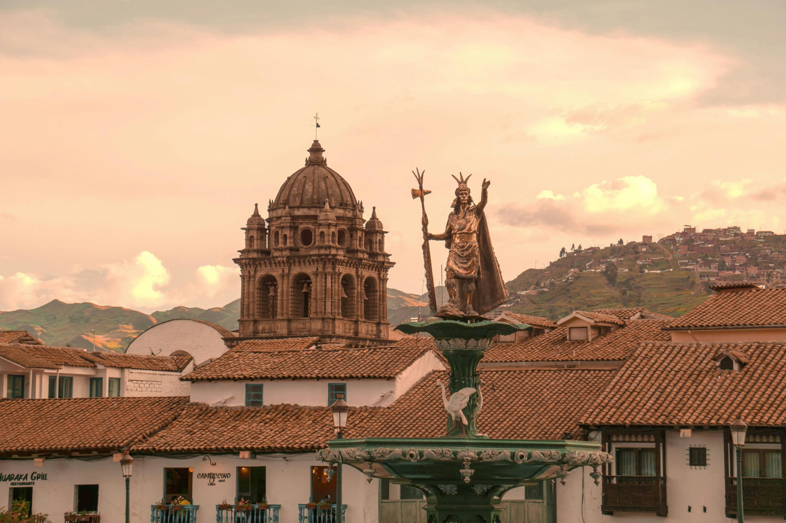
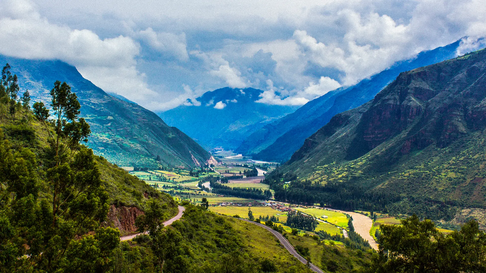

Why Visit the Manu National Park?
Nestled deep within the Peruvian Amazon, Manu National Park stands as a beacon for nature enthusiasts and adventure seekers. Known for its unparalleled biodiversity and
Machu Picchu tours from Cusco are on the bucket list of many travelers, and it’s no wonder why. This stunning Inca citadel holds immense historical and cultural significance. But before you embark on your adventure, a little preparation can go a long way. Here’s a friendly guide to ensure you have the best experience on your Machu Picchu hiking tours.
Machu Picchu, often dubbed the “Lost City of the Incas,” is perched high in the Andes, surrounded by breathtaking beauty. It’s a place where history and nature intertwine seamlessly, making it an unforgettable destination for travelers. But why is proper preparation crucial?
The Inca Empire once ruled over South America, leaving a remarkable legacy of architectural marvels. Machu Picchu is just one example of their mastery. Its intricate stonework and terraced fields are a testament to their skill.
In 1911, the world’s fascination with Machu Picchu was reignited when Hiram Bingham, an adventurous explorer, unveiled the city to the world. His journey into the unknown rekindled our interest in this hidden gem.
Machu Picchu’s location is nothing short of extraordinary. It sits on a mountaintop, surrounded by steep cliffs and vibrant terraces, creating an environment that is both stunning and mystifying.
Machu Picchu is just one jewel in the larger crown of the Sacred Valley. This region is adorned with archaeological treasures, charming towns, and landscapes that take your breath away.
When planning your Machu Picchu adventure, consider the weather. There’s a distinct contrast between the wet and dry seasons. The dry season, from May to October, is ideal for clear views and trekking.
Machu Picchu sees a surge in visitors during the dry season. If you prefer a more tranquil experience, consider the less crowded off-peak times.
You might also time your visit to coincide with local festivals, adding an extra layer of cultural richness to your adventure.
Getting to Machu Picchu is part of the adventure. You can reach this awe-inspiring site by Machu Picchu hiking tours or the more leisurely train ride.
By Train
The train journey to Aguas Calientes, the gateway to Machu Picchu, offers breathtaking views of the Andean landscape. We recommend taking transportation (car or local van) to Ollantaytambo, and taking the train the rest of the way. It’s worth spending part of a day or even an overnight in Ollantaytambo.
By Foot (Trekking)
If you’re up for an adventure, Machu Picchu hiking tours via the Inca Trail or other trekking routes will make your journey unforgettable. These trips can be booked by various travel agencies based in Cusco. You definitely will want to plan this trip a few months in advance to secure a spot on the famous trail. Our friends at Andean Sky Travel can help you plan your Inca trail adventure.
Nearby Towns: Aguas Calientes (Machu Picchu Pueblo)
Aguas Calientes is a bustling town at the base of Machu Picchu, offering a range of accommodations and local cuisine.
Important Details About the Airport in Cusco
Your journey starts in Cusco, where you can acclimate to the altitude and explore the city before heading to Machu Picchu. We would be happy to give you any
Navigating the Ticketing System: Types of Tickets and Where to Buy Them
Securing your tickets is an important step. There are various ticket options for different interests, and you can purchase them in advance.
Guided Tours vs. Independent Exploration
Decide whether you want the insights of a knowledgeable guide or the freedom to explore Machu Picchu on your own. There are many options for booking all-inclusive Machu Picchu Tours Packages. We can also help give you tips about visiting on your own. There are options for everyone.
Special Access Areas: Huayna Picchu & Machu Picchu Mountain
If you’re seeking an extra challenge, consider climbing Huayna Picchu or Machu Picchu Mountain for stunning panoramic views. These spots are each accessible on distinct tickets, so it’s important to read your options carefully if booking on your own.
Be sure to pack sturdy hiking boots, rain gear, and other essentials for your journey. Don’t forget a good camera to capture the breathtaking landscapes.
Layering is key, as the weather can shift throughout the day. Be prepared for sunny mornings and chilly evenings. A sun hat and sunglasses will come in handy. Keep your passport, permits, and tickets in a secure place. You’ll need them throughout your journey.
Read more for Packing List for Your Trip to The Peruvian Jungle.
Cusco and Machu Picchu are at high altitudes, so it’s essential to give your body time to adjust. Spend a day or two in Cusco acclimating before heading to Machu Picchu. Drink plenty of water and consider consulting your doctor about altitude sickness prevention.
The Andean region is teeming with unique flora and fauna. Respect the local wildlife, and be cautious around any unfamiliar plants.
While exploring, enjoy local cuisine, but be mindful of food safety. Stick to bottled water to avoid stomach issues.
Machu Picchu is a UNESCO World Heritage Site. Help protect it by following “Leave No Trace” principles. Don’t remove anything from the site and dispose of trash properly.
Respect the rules and regulations at the site, which include not touching or climbing on the ruins and avoiding loud noises.
There are time limits for exploring Machu Picchu, so make the most of your visit within the allocated hours. Some areas may have restricted access due to conservation efforts.
When visiting nearby towns and communities, show respect for their customs and traditions. Engaging with locals can provide you with a richer cultural experience.
Machu Picchu is considered a sacred site by the indigenous people of the region. Be mindful of their rituals and ceremonies, and don’t interrupt or intrude.
If you shop for souvenirs, remember to bargain respectfully. It’s part of the local culture, but be fair and avoid haggling over small sums.
Staying in Aguas Calientes vs. Other Towns
Aguas Calientes (Machu Picchu Pueblo) is the nearest town to the citadel, making it a convenient choice. However, there are other towns to consider, each offering a unique experience.
Range of Accommodations: Hostels to Luxury Hotels
Accommodations range from budget-friendly hostels to luxurious hotels. Choose the one that best suits your preferences and budget.
Recommendations for an Immersive Experience
To fully immerse yourself in the local culture, consider staying in lodges or smaller, locally-run establishments.
The Inca Trail and Other Trekking Options
While the Inca Trail is famous, there are alternative trekking routes that offer equally stunning experiences. Research to find the best Machu Picchu hiking tours that suit your interests and fitness level.
Lesser-Known Archaeological Sites
Explore nearby archaeological sites such as Ollantaytambo, Pisac, and more. These sites provide insights into the vast Inca civilization.
Exploring the Sacred Valley: Ollantaytambo, Pisac, and Others
The Sacred Valley is a treasure trove of historical and natural wonders. Consider extending your trip to explore this enchanting region.
Your journey to Machu Picchu from Cusco is not just a vacation; it’s a magical experience. By following these guidelines and respecting the local culture, you can ensure that this iconic destination remains a wonder for generations to come. Remember, sustainable and responsible tourism is key to preserving this historical gem for future travelers.
Now that you’re armed with knowledge about Machu Picchu tours from Cusco, Machu Picchu hiking tours, and Machu Picchu tour packages, it’s time to embark on your adventure. Enjoy your unforgettable trip to Machu Picchu, and make memories that will last a lifetime!
Nestled deep within the Peruvian Amazon, Manu National Park stands as a beacon for nature enthusiasts and adventure seekers. Known for its unparalleled biodiversity and

Learn about some of out favorite hidden gems around the magnificent city of Cusco.

Nestled in southeastern Peru, the Manu National Park is a remarkable UNESCO World Heritage Site. Spanning 1.5 million hectares from the Andean highlands to the

When planning a trip to Peru, you will undoubtedly consider your journey from your home to Cusco, then your journey from Cusco to Machu Picchu.